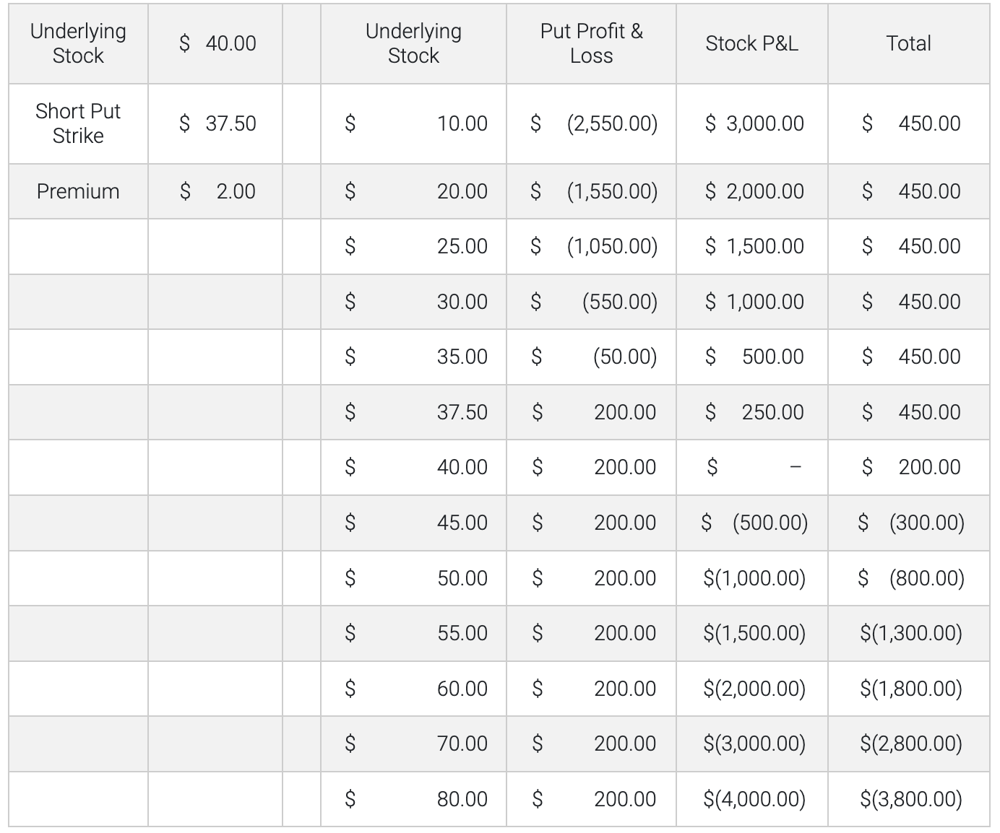

Bear Market - Covered Put
A covered put would be considered by someone who would like to derive additional income from a short stock position. A covered put allows the investor to hold a short equity position while simultaneously receiving the premium from selling an equal amount of put options against it. The covered put writer is bearish on the stock’s long-term potential but is willing to forego a stock’s downside below the strike during the life of the option in order to receive the proceeds of the put premium. The covered put writer benefits from time decay, from a reduction in volatility and if the stock decreases its dividend before expiration. It should be noted that the combined position has a similar profile to that of a short call. The covered put writer remains exposed to any upside in the underlying shares, meaning his loss potential is unlimited.
Market Outlook - Mildly Bearish Volatility View - Premium decreases Time Erosion - Helps Dividends - Premium decreases Interest Rate - Premium increases Profit Potential - Limited to gains from short equity down to the strike price, plus premium received from the sale of put option Loss Potential - Unlimited to upside movement in the equity minus the premium received from the sale of put option Components - Short equity, short put option Covered Put Example:
• Underlying XYZ stock price: $40.00 • Put strike price: 37.50 • Put option premium: $2.00 • Days to expiration: 90 • Breakeven: 40.00+$2.00 = $42.00 (underlying share purchase price plus premium received for put option) • Profit potential: Limited to the fall in the underlying share price until the strike price is reached, plus the premium received from the sale of the put option. Thereafter, short gains from the stock are equally offset by the rising cost of the short put option. • Potential profit: $37.50 – The sum of the decline in the stock price ($40.00 - $37.50 = $2.50) plus the premium of $2.00 received from the sale of the put for a total of $4.50. • @$35.00 – The strike price marks the maximum potential profit from the strategy. The gain on the short stock of $5.00 is added to the premium of $2.00 received from the sale of the put. However, the put has $2.50 intrinsic value when the option expires with the stock at $35.00. At any point below the strike price at expiration, what the investor gains from the declining stock, he loses penny-for-penny on the short put option. In this case the net loss from the option ($2.00 received less its $2.50 value at expiration) is $0.50c and is subtracted from the gain of $5.00 on the short stock. Hence the maximum potential gain from the strategy is always $4.50. • @$44.00 – At any price above the put strike the option expires worthless and the investor keeps the entire premium. However, the stock has risen by $4.00 per share. That loss is partially offset by the premium received from the sale of the put option. So, the overall loss at $44.00 per share is $4.00 - $2.00 or $2.00. • Maximum loss: Unlimited by the fact that the stock can continue to rise. However, the investor starts to lose money at the share purchase price plus the premium received ($40.00 plus $2.00 = $42.00) and continues to lose penny-for-penny as the share price increases further.

Disclosures Options involve risk and are not suitable for all investors. For more information, read the “Characteristics and Risks of Standardized Options”. For a copy, call 312-542-6901. Trading on margin is only for sophisticated investors with a high risk tolerance. You may lose more than your initial investment. For additional information regarding margin loan rates, see ibkr.com/interest.
Multiple leg strategies, including spreads, will incur multiple commission charges.